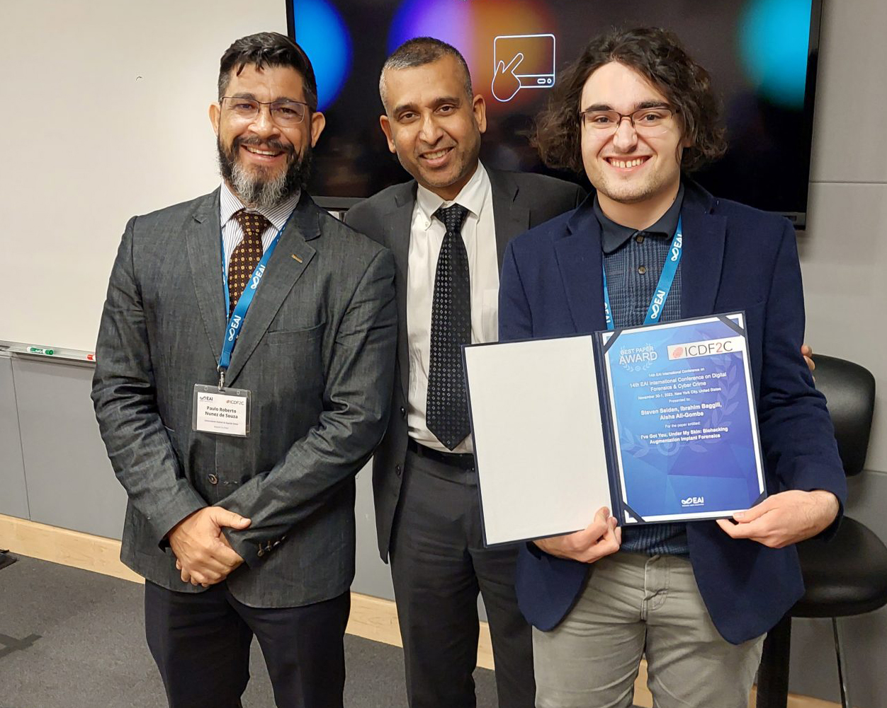

Conference Proceedings
The following are examples of written work I have written/contributed to for conference
presentations:

Accepting the Best Paper Award at EAI's ICDF2C 2023
S. Seiden, I. Baggili, and A. I. Ali-Gombe, ‘I’ve Got You, Under My Skin: Biohacking Augmentation Implant Forensics’, in Digital Forensics and Cyber Crime, New York, NY, USA. (Best Paper Award)
This publication is the result of a CSC 4700 class project studying the security impact of sub-dermal
microchip implants. This paper dives into the process of performing a full forensic analysis of these chips,
from discovery to removal to data extraction.
Soares, N., Seiden, S.,
Baggili, I., & Webb, A. (2023, July). On the Application of Synthetic Media to Penetration Testing.
In Proceedings of the 2nd Workshop on Security Implications of Deepfakes and Cheapfakes (pp.
1-10).
This publication studies the use-cases of AI-generated
synthetic media within penetration testing.

S. Seiden, L. Huang, and C. Wang, ‘Poster: Snooping Online Form Choice Privacy in Video Calls’, Poster Presentation in the 2023 IEEE Symposium on Security and Privacy, San Francisco, CA, USA.
An abstract from a poster presentation I made for my research in the LSU MIST lab.
This project involved studying the security impact of sharing your video feed within online conference calls.
Poster Presentations
The following are examples of written work I have presented as poster
presentations:


Standing next to my poster presentations for Rice University (left) and Stanford University (Right).
Decoding the Poseidon Congestion Control Protocol:
A Security Assessment
A poster presentation given during the closing symposium of the 2023 Rice Computer and Data Science REU program.
This poster summarizes my research on Poseidon, a new congestion control network algorithm.
Snooping Online Form Choice Privacy in
Video Calls
An abstract from a poster presentation I made for my research in the LSU MIST lab.
This project involved studying the security impact of sharing your video feed within online conference calls.